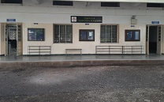

Department Information
The Department of Computer Science and Engineering - Walchand College of
Engineering, Sangli was established in 1986. The department has
contributed in producing several eminent engineers who are in key
positions of the Government organizations, public sector and
Multinational companies and have brought in significant contributions in
various regions of India. Alumni of the department can be found in all
public and private sector organizations operating in diverse fields,
holding senior key positions in the organizations.
The Department is known for its reputed faculty having expertise in diverse fields. The faculty has contributed research papers in various Journals and Conferences. It has built up a wide research potential in Computer Science and Engineering. The department has well equipped engineering laboratories in the field of Deep Learning, Image Processing and Computer Vision, IoT, Artificial Intelligence and Machine Learning. Apart from the Central computing facility the department has its own computing facility and continuous internet access.
Department Image
Contact Details
Walchand College of Engineering ,A/P: Vishrambag,
Sangli - 416 415
Maharashtra, India
Tel: +91-233-2300383
www.walchandsangli.ac.in